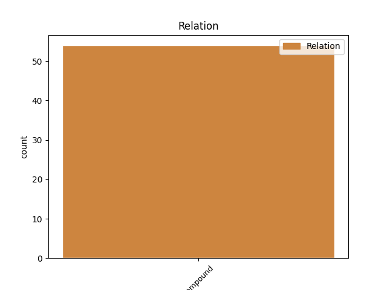
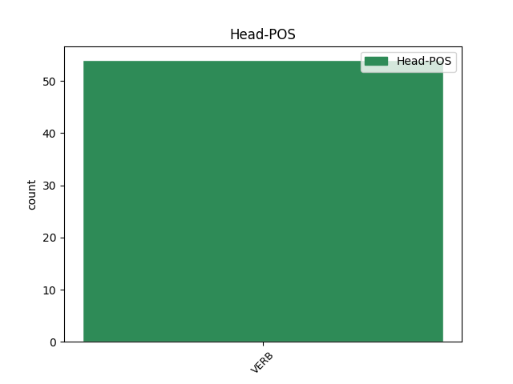
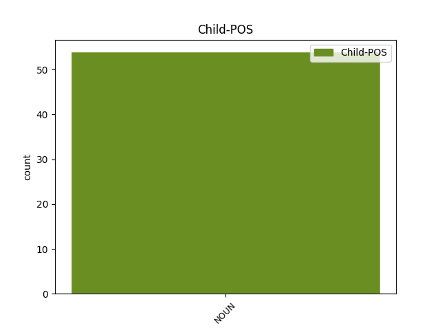

Distribution of features within this leaf



Agreement Rules sorted by frequency.
- When the dependent token is the compound(compound) of the head token, and the head token is VERB
1 Aldai _ _ _ _ 0 _ _ _
2 izeneko _ _ _ _ 0 _ _ _
3 transformazio-zentroari _ _ _ _ 0 _ _ _
4 , _ _ _ _ 0 _ _ _
5 egitura _ _ _ _ 0 _ _ _
6 trinkodun _ _ _ _ 0 _ _ _
7 prefabrikatuari _ _ _ _ 0 _ _ _
8 ( _ _ _ _ 0 _ _ _
9 13,2 _ _ _ _ 0 _ _ _
10 kv _ _ _ _ 0 _ _ _
11 ) _ _ _ _ 0 _ _ _
12 Administrazioaren _ _ _ _ 0 _ _ _
13 baimena baimen NOUN _ Case=Abs|Definite=Def|Number=Sing 14 compound _ _
14 ematea eman VERB _ Case=Abs 0 _ _ _
15 eta _ _ _ _ 0 _ _ _
16 egiteko _ _ _ _ 0 _ _ _
17 proiektua _ _ _ _ 0 _ _ _
18 onartzea _ _ _ _ 0 _ _ _
19 . _ _ _ _ 0 _ _ _
Disagree Examples:
1 Ezen _ _ _ _ 0 _ _ _
2 , _ _ _ _ 0 _ _ _
3 BEAko _ _ _ _ 0 _ _ _
4 txostenean _ _ _ _ 0 _ _ _
5 irakur _ _ _ _ 0 _ _ _
6 daitekeenez _ _ _ _ 0 _ _ _
7 , _ _ _ _ 0 _ _ _
8 Concordea _ _ _ _ 0 _ _ _
9 zerbitzuan _ _ _ _ 0 _ _ _
10 jarri _ _ _ _ 0 _ _ _
11 zenetik _ _ _ _ 0 _ _ _
12 keroseno _ _ _ _ 0 _ _ _
13 ontzietan _ _ _ _ 0 _ _ _
14 sei _ _ _ _ 0 _ _ _
15 aldiz _ _ _ _ 0 _ _ _
16 gertatu _ _ _ _ 0 _ _ _
17 dira _ _ _ _ 0 _ _ _
18 kaltetzeak _ _ _ _ 0 _ _ _
19 , _ _ _ _ 0 _ _ _
20 baina _ _ _ _ 0 _ _ _
21 sekula _ _ _ _ 0 _ _ _
22 ez _ _ _ _ 0 _ _ _
23 zen _ _ _ _ 0 _ _ _
24 erregaiak _ _ _ _ 0 _ _ _
25 su su NOUN _ Case=Abs|Definite=Ind 26 compound _ _
26 hartzerik hartu VERB _ Case=Par 0 _ _ _
27 gertatu _ _ _ _ 0 _ _ _
28 . _ _ _ _ 0 _ _ _
1 " _ _ _ _ 0 _ _ _
2 Familiako _ _ _ _ 0 _ _ _
3 kontuek _ _ _ _ 0 _ _ _
4 bultzatu _ _ _ _ 0 _ _ _
5 dute _ _ _ _ 0 _ _ _
6 gure _ _ _ _ 0 _ _ _
7 eskaintzari _ _ _ _ 0 _ _ _
8 uko uko NOUN _ Case=Abs|Definite=Ind 9 compound _ _
9 egitera egin VERB _ Case=All 0 _ _ _
10 . _ _ _ _ 0 _ _ _
1 Foroak _ _ _ _ 0 _ _ _
2 hainbat _ _ _ _ 0 _ _ _
3 gai _ _ _ _ 0 _ _ _
4 eztabaidatzea _ _ _ _ 0 _ _ _
5 eta _ _ _ _ 0 _ _ _
6 ostera _ _ _ _ 0 _ _ _
7 praktikan praktika NOUN _ Case=Ine|Definite=Def|Number=Sing 8 compound _ _
8 jartzea jarri VERB _ Case=Abs 0 _ _ _
9 du _ _ _ _ 0 _ _ _
10 helburu _ _ _ _ 0 _ _ _
11 . _ _ _ _ 0 _ _ _
1 Aulkian _ _ _ _ 0 _ _ _
2 bizarra bizar NOUN _ Case=Abs|Definite=Def|Number=Sing 3 compound _ _
3 kentzeko kendu VERB _ Case=Loc 0 _ _ _
4 labana _ _ _ _ 0 _ _ _
5 zegoen _ _ _ _ 0 _ _ _
6 odolduta _ _ _ _ 0 _ _ _
7 . _ _ _ _ 0 _ _ _
1 Ez _ _ _ _ 0 _ _ _
2 dago _ _ _ _ 0 _ _ _
3 maratoilari _ _ _ _ 0 _ _ _
4 batentzat _ _ _ _ 0 _ _ _
5 agur agur NOUN _ Case=Abs|Definite=Ind 6 compound _ _
6 esateko esan VERB _ Case=Loc 0 _ _ _
7 Atenas _ _ _ _ 0 _ _ _
8 baino _ _ _ _ 0 _ _ _
9 leku _ _ _ _ 0 _ _ _
10 hoberik _ _ _ _ 0 _ _ _
11 . _ _ _ _ 0 _ _ _